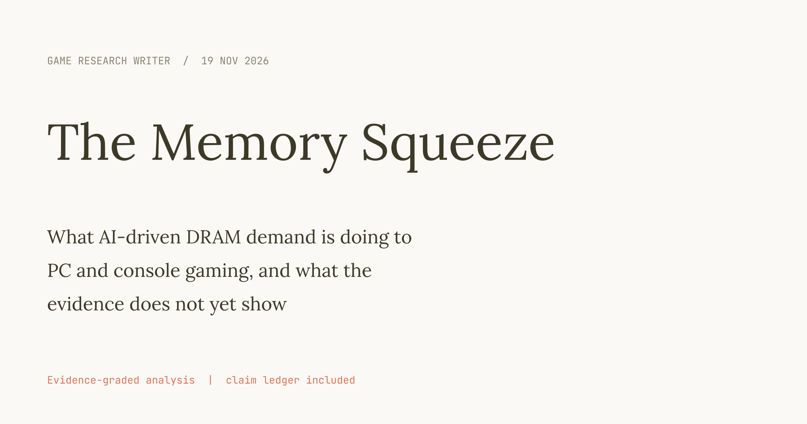
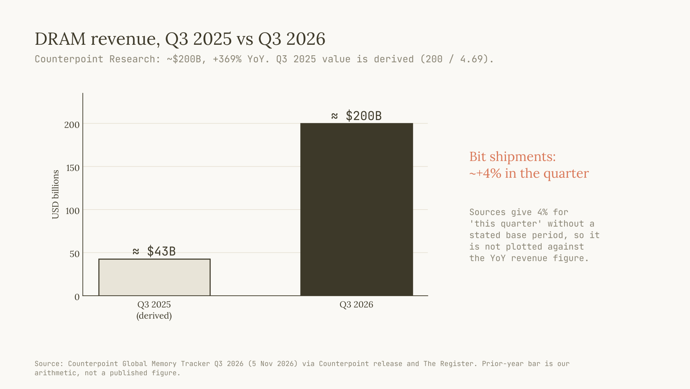
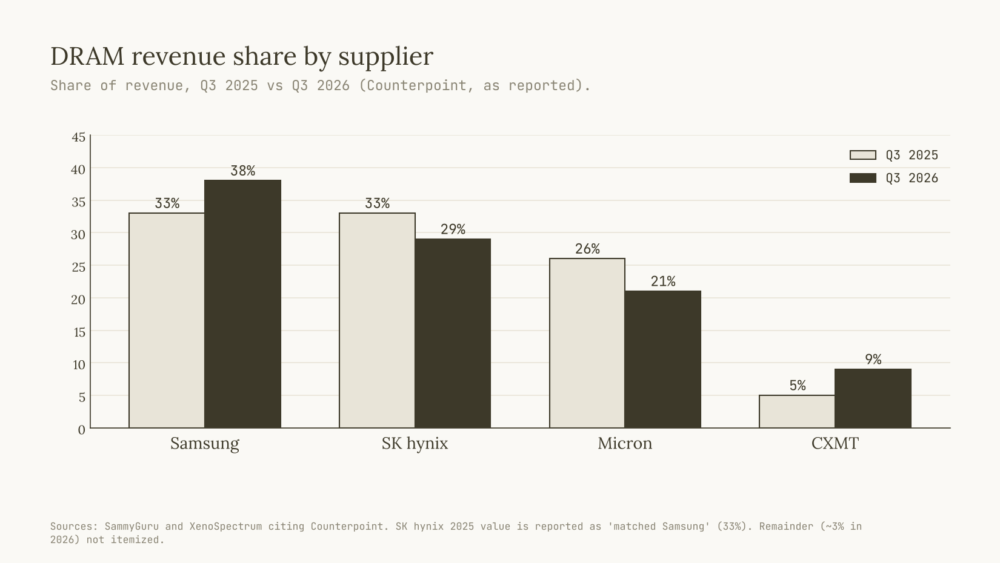
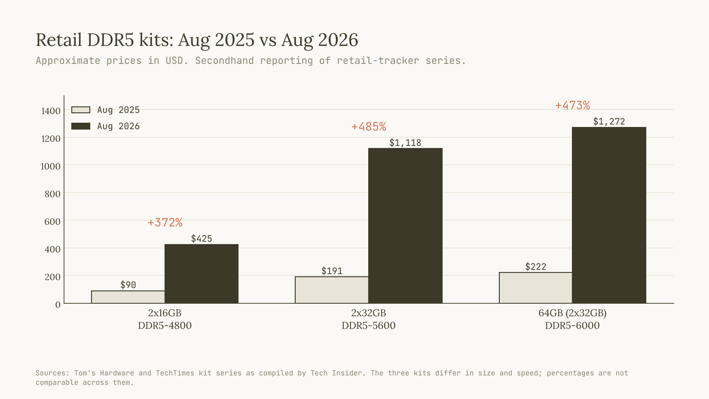
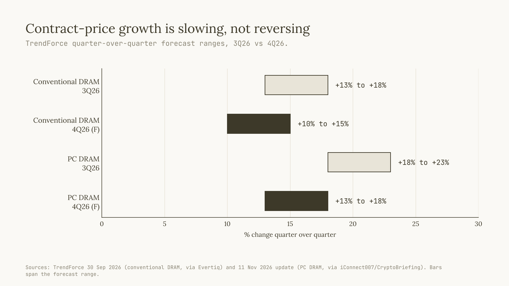
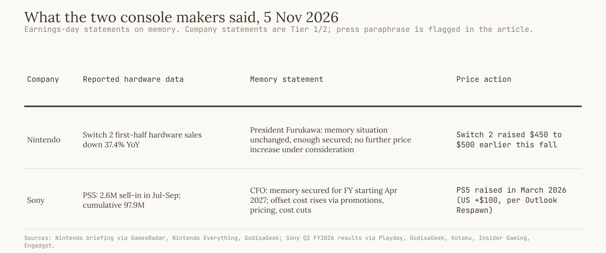
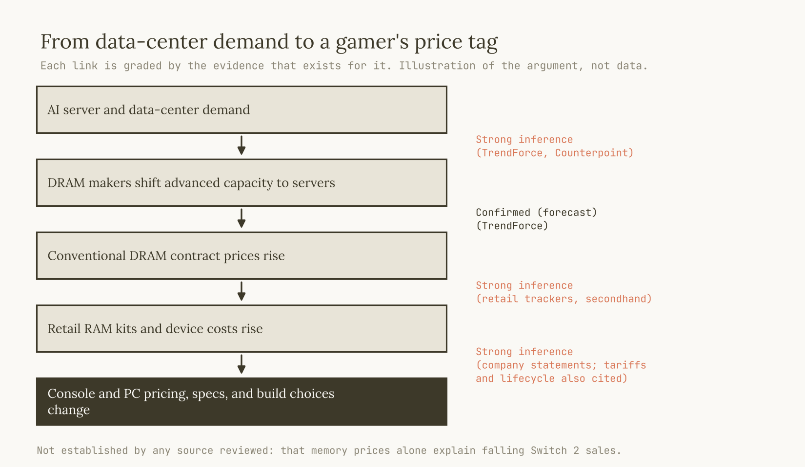
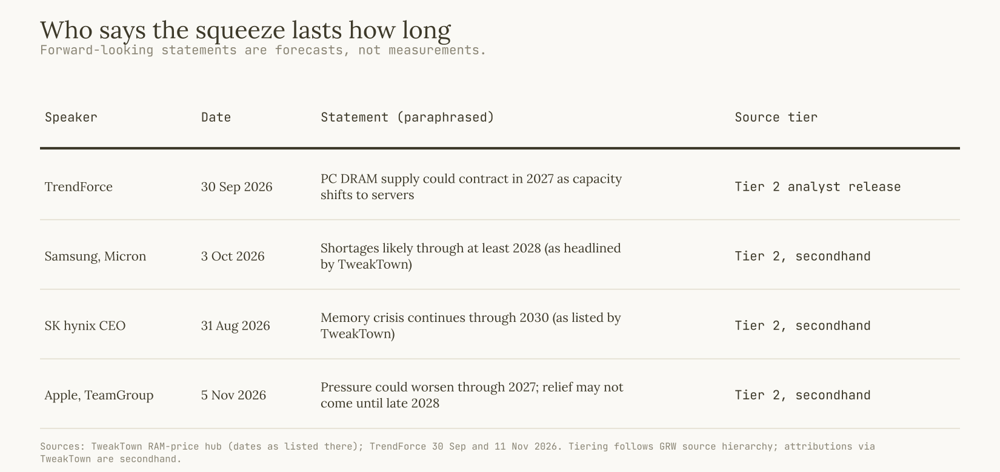
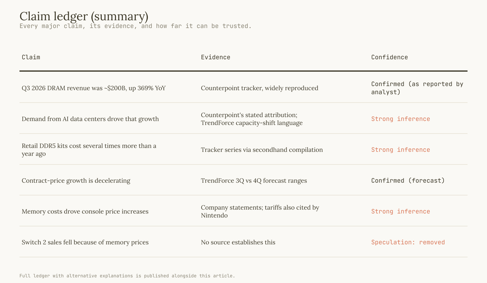

Game Research Writer · Gaming, hardware and AI · 19 November 2026
The Memory Squeeze
AI data centers are buying memory at a pace that analysts say is repricing the whole DRAM market. This article asks what that has done to PC and console gaming so far, and, just as important, what the available evidence does not show.

1. Introduction
The central question is narrow. Between roughly September and mid-November 2026, did the surge in memory prices attributed to AI infrastructure demand measurably change what gamers pay for, or can buy from, PCs and consoles, and how confident can we be in the causal story?
The question matters because "AI is making everything expensive" is easy to say and hard to prove. Some of it is documented. Some of it is a plausible inference. Some of what circulates has no source behind it at all. This article separates the three.
2. Context
DRAM is the working memory in PCs, consoles and phones. The same fabs that supply it also supply memory for AI servers. When server buyers compete for that capacity, consumer products compete with them, either directly or through the capacity that suppliers choose to allocate.
Two analyst firms frame the current picture. Counterpoint Research's Q3 2026 tracker, published 5 November, puts global DRAM revenue at roughly $200 billion, up 369% on a year earlier, and attributes the growth to demand from AI accelerators and data centers. Its senior analyst describes the moment as a pricing super-cycle, not yet a volume cycle
, noting that bit shipments rose only about 4% in the quarter.
TrendForce's 30 September outlook adds the supply side: it expects conventional DRAM contract prices to rise a further 10% to 15% quarter over quarter in Q4 2026 and warns that PC DRAM supply could contract in 2027 as capacity moves toward server applications.
3. Evidence
3.1 Market scale and structure (observation)

The revenue figure is well sourced: Counterpoint's own release, plus coverage by The Register and others, agree. One caution on interpretation. The roughly 4% bit-shipment figure is given for "this quarter" without a stated comparison period in the sources we could access, so we do not set it against the year-over-year revenue figure. What the sources do support is that price, not volume, is the dominant explanation for the revenue jump that Counterpoint reports.

Share data matter here for one reason: the market that sells memory to consumers is concentrated among a few suppliers whose largest customers are, per Counterpoint, AI-related. Concentration is context, not proof of intent.
3.2 What shoppers see (strong inference, secondhand data)

Price trackers cited by the same compilation put the cheapest 32GB DDR5-6000 kit at $438 on 11 November, with a tracked low of $72 for that class of kit; a separate tracker reported $465 on 9 November. Those figures come through a secondhand compilation rather than directly from the trackers, so we treat the direction (sharply higher than a year ago) as well supported and the exact dollar values as approximate. TweakTown also reports that 64GB PC builds are becoming rarer as enthusiasts move to 16GB and 24GB configurations; its summary gives no percentage, so the size of that shift is unknown.
3.3 Is the pace changing? (observation of forecasts)

TrendForce's 11 November update cuts the expected Q4 PC DRAM increase to 13% to 18%, down from 18% to 23% in Q3, and says weak PC sales and rising inventories are acting as a brake. It also notes that some PC makers bought ahead of expected increases. That detail matters for causality, and we return to it below.
4. Case studies

4.1 Nintendo
Verified. At its 5 November results briefing, president Shuntaro Furukawa said Nintendo is not considering another Switch 2 price increase and that it can secure sufficient memory, with no major change in the memory situation. Press coverage of the same results reports Switch 2 first-half hardware sales down about 37% year over year (GodisaGeek gives 37.4%). Nintendo raised the console from $450 to $500 earlier this fall; GamesBeat reports September and ties it to expiring memory contracts, while Engadget's report lists memory costs and U.S. tariffs.
Interpretation. The price rise is consistent with a memory-cost effect, and Nintendo's own stated reason includes it. The sales decline is a different matter. We found no source establishing why Switch 2 sales fell. Plausible contributors include the price increase itself, a high comparison base from the console's launch window (an inference from the mid-2025 launch date, not a sourced claim), and GamesBeat's reference to a lack of recent hits. The available sources document the decline but do not establish the reason.
4.2 Sony
Verified. Sony's Q2 results, also on 5 November, show 2.6 million PS5 units sold into the channel in July to September, taking the cumulative total to 97.9 million. Sony said it has settled memory quantities for the fiscal year starting April 2027 and that it offset memory-price rises through promotion and pricing adjustments and cost reductions. CFO Lin Tao described PS6 development as proceeding as scheduled and called the decline in new PS5 sales expected at this stage of a console's life. Game and network services revenue rose 9% and operating income 83% year over year, per GodisaGeek's summary. Sony's CEO Hiroki Totoki, as quoted by Insider Gaming, said memory prices are expected to remain very high in fiscal 2027 and the company must think carefully about what to do.
Interpretation. Sony's own account of its PS5 slowdown points to lifecycle, not only memory. Its memory comments bear mainly on cost and on how it plans the next console. The PS6 launch window has not been announced, so any claim that memory prices will delay or reprice it is speculation at this point; one leaker's price claim listed by TweakTown is a Tier 4 source and is not used.


These statements disagree on timing, which is itself informative: TrendForce speaks of 2027 supply, while others cited by TweakTown speak of 2028 and 2030. We do not have the original statements for the secondhand items, so the table should be read as "what is reported," not "what was said."
5. Counterarguments and alternative interpretations
The strongest opposing view: this is not mainly an AI story
A skeptic can point out that console makers cite several pressures at once. Nintendo's price rise coincided with U.S. tariffs in at least one report. Sony frames its PS5 decline as ordinary late-lifecycle behavior. Gaming sales also depend on release calendars and the strength of first-party software. On this reading, memory is one cost among several, and attributing console softness to AI is a convenient narrative.
Supporting evidence for that view
- Sony reports gaming profit rising even as PS5 hardware volume falls, which is not what a pure cost-shock story predicts.
- Nintendo says it has secured enough memory and is not raising prices again, so the near-term hardware impact on consoles is partly cushioned by long-term contracts.
- TrendForce observes that PC makers pulled purchases forward and now carry inventory. Buyer behavior, not only AI demand, shaped recent price moves.
Weaknesses in this article's argument
- The retail-price evidence is secondhand and mixes products, so it supports direction better than magnitude.
- Analyst attribution to AI demand is an analyst interpretation. No memory manufacturer statement we reviewed directly measures how much capacity went to servers versus consumer parts.
- Announcements that supply is "secured" are company statements about their own position; they are not independently audited.
Unresolved questions
- How much of the 2026 console and PC price movement is memory, how much tariffs, how much currency?
- Does the slowing contract-price growth reach retail, or do retail prices lag?
- Do consumers respond by buying less memory (the 64GB trend) and, if so, does that ease prices?
6. Limitations
- Several figures reach us through aggregators and press summaries rather than original filings. Where this is the case it is stated.
- Forecasts (TrendForce) and executive statements about the future are not measurements.
- Gaming news moves fast. GTA VI is reported by GamesBeat as releasing 19 November 2026; we did not verify launch status or sales and draw no conclusions from it.
- Counterpoint's headline numbers are reproduced widely, but we read the release and coverage, not the paid underlying dataset.
7. Conclusion
What we know
- Counterpoint reports Q3 2026 DRAM revenue near $200 billion, up 369% year over year, led by price rather than volume.
- TrendForce forecasts further Q4 contract-price rises, at a slower pace than Q3, and warns of a possible PC DRAM supply contraction in 2027.
- Nintendo raised the Switch 2 price this fall and says it is not planning another increase. Sony says it has secured memory through its next fiscal year.
What we think
- AI-driven server demand is a major cause of the memory price rise (strong inference; analysts attribute it, the supply shift is documented as a forecast).
- Retail PC memory is several times more expensive than a year ago (strong inference; secondhand data).
- Memory costs contributed to console price increases (strong inference; company statements, with tariffs also cited).
What we don't know
- Why Switch 2 sales fell.
- How large the 64GB-build decline is.
- Whether slower contract-price growth will reach shelf prices, and whether the PS6 timeline or price will change.
Review notes
A hostile read of the first draft produced these changes: a chart pairing the 369% revenue figure with the 4% shipment figure was dropped because their base periods are not comparable; a causal sentence linking memory prices to Switch 2 sales was removed for lack of evidence; and a quoted claim from a company executive about PCs wasting scarce memory was left out as an unverified, contested remark. The claim ledger below shows the final grading.

8. Sources
- Counterpoint Research, "DRAM super cycle nears $200B," 5 Nov 2026 — counterpointresearch.com (Tier 2, analyst release)
- The Register, "Memory makers mint megabucks while buyers beg for mercy" — theregister.com (Tier 2)
- TrendForce press release, 30 Sep 2026 — trendforce.com (Tier 2); Evertiq summary — evertiq.com
- TrendForce 11 Nov 2026 PC DRAM update via iConnect007 — iconnect007.com (Tier 2, secondhand)
- SammyGuru, Samsung 38% share citing Counterpoint — sammyguru.com; XenoSpectrum on CXMT share — xenospectrum.com (Tier 3, secondhand)
- Tech Insider, DDR5 price compilation — tech-insider.org (Tier 3, aggregator of Tom's Hardware, TechTimes and others)
- TweakTown RAM-price hub — tweaktown.com (Tier 2/3, headline summaries)
- GamesRadar, Nintendo no further Switch 2 price rise, 5 Nov 2026 — gamesradar.com; GodisaGeek (37.4%) — godisageek.com; Nintendo Everything — nintendoeverything.com; GamesBeat — gamesbeat.com; Engadget — engadget.com
- Sony Q2 FY2026 coverage: GodisaGeek — godisageek.com; Playday — playday.one; GamingBolt — gamingbolt.com; Insider Gaming — insider-gaming.com; Outlook Respawn (March 2026 PS5 price) — outlookindia.com
- Playday weekly roundup, 2-8 Nov 2026 — playday.one